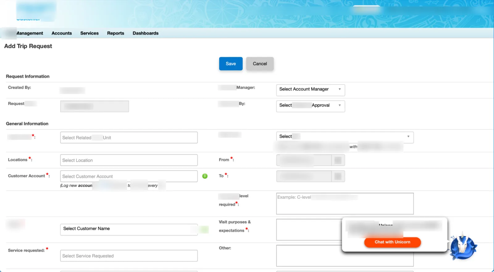
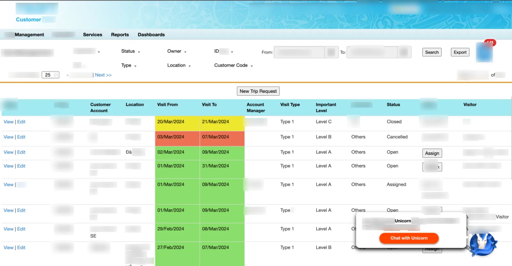
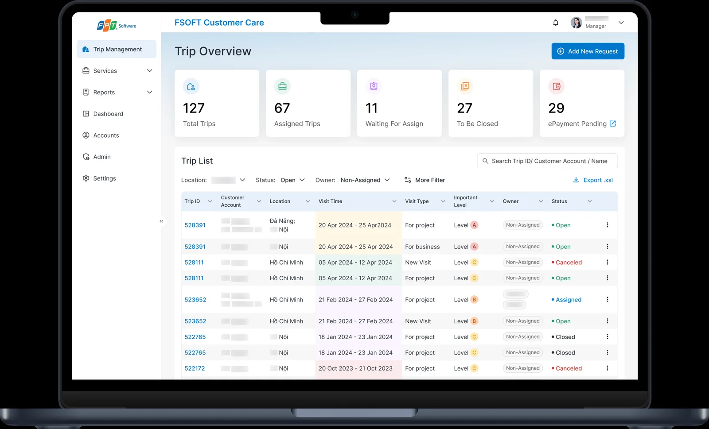
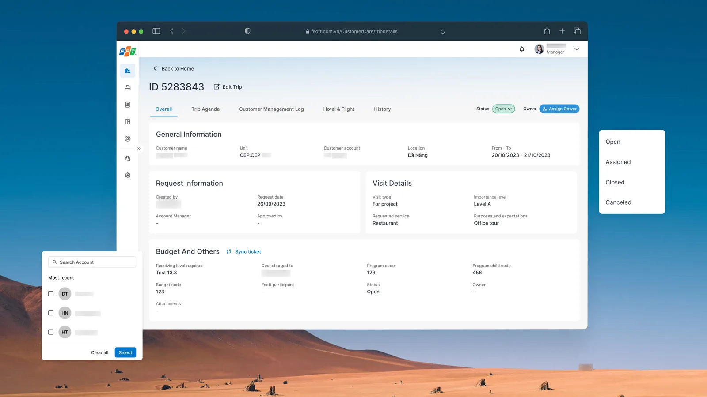

Overview
An audit of the visit-management tool found 36 usability defects counted, and the only critical-severity one sat on the screen managers used most — the request form itself.
Three weeks in, with feedback arriving from three stakeholder groups and no single approver, I cut four of five user roles and two of five modules out of Phase 1 and spent the room on mobile.
Phase 1 shipped, and two further phases followed — the tool now runs inside the company super app as a webview. The main task was modelled at 6.2 → 3.6 minutes. estimated
Discovery
What the tool was for
A senior customer flies in for two days. Before they land, someone books the meetings, drafts an agenda, assigns who from which delivery unit attends, sets a budget and records what the visitor cares about. Get it wrong and the company looks careless in front of the account it most wants to keep.
All of that lived in one internal tool, and the team that ran it had stopped expecting the tool to help. That is the state I was asked to change — and the reason the audit had to come before anyone drew a screen.

User insight
Three managers who run visits daily, plus the tool owner and the business owner. The complaint I expected was "it's ugly". What I got was sharper: the filters returned wrong results, because they were querying an old database. People had built habits around not trusting the tool — three filters were the only ones anyone used, and everything else was noise.
Data insight
The volume made the case. 1,376 requests in 2023 and 2,096 forecast for 2024 client data — a rising load on a tool with a defective form at the centre of it. Time on the main task was modelled at 6.2 minutes, which is the baseline every claim in §7 rests on.
How was 6.2 minutes derived — stopwatch on real users, system logs, or expert estimate? This one answer decides whether §7 can say "measured" anywhere at all.
Business insight
Missing, and an interviewer will ask. Nothing in the source set says why the business funded this in March 2024 rather than any other month. What was the tool blocking — a growing account team, a visit volume the process couldn't absorb, a complaint from a delivery unit? One sentence closes it.
The four questions, answered in writing
- Who are the users, and what problem do they have? Five roles touch a visit record — the requester, the customer relations team, their manager, the delivery unit and an administrator. The manager carries the coordination load, and the form they use most is the one that fails hardest.
- Why now? Unfilled — see Business insight above. Rising request volume is the standing reason; name the trigger that made it that quarter.
- What would tell us it worked? Time on the main task, against a 6.2-minute baseline. The target set at the outset was a 34% reduction; the modelled design came out at 42%.
- Is it feasible? Yes — and we proved it by sequencing the design foundation in week one, so screens could be assembled rather than drawn from scratch.
The decision: four roles, cut
The proposal I signed off promised five roles across five modules on desktop and mobile, in three and a half months. By week three it was clear that was a plan for a document, not a release. Feedback was arriving from three stakeholder groups at once with nobody empowered to settle a disagreement, and the scope was quietly growing while the release dates stayed where they were.
I wrote it up as an amber status that week rather than a green one, and then had to say what I would do about it.
Options
Hold the contract. All five roles, all five modules, as promised. Honours the proposal, but each role gets a handful of days and none of them ends up usable.
Keep the roles, thin the modules. Wide and shallow. Every role gets something and no role can complete a visit.
One role, properly. Narrow to the manager — the role that touches the tool most and owns the critical screen — and go deep enough to ship, desktop and mobile.
Criteria
Which role touches the tool most often? Which module contains the one critical defect? And the constraint that decided it: what can development start building in April, rather than review in June?
What I chose
C. I rewrote the work breakdown down to a single role — manager, desktop and mobile — and pulled the timeline in from three and a half months to two and a half. Shorter, not longer: a narrower scope with a real handoff date was easier to defend to the client than a broad one that kept slipping.
What I killed
Two modules — dashboard and account management — which stayed at "to do" when Phase 1 closed, and never came back. Four roles pushed to a Phase 2 that I cannot confirm ran. And of the 26 change requests the client raised after the design review, I marked 11 out of scope counted, eight of them on the agenda feature alone: calendar view, auto-updating meeting invites, assignee availability checks, visitor photos, live progress. Each was a reasonable request. Together they were another project.
The trade I made with that room was specific. Agenda — a feature the original plan did not include at all — was added mid-project because the interviews said it was where the format errors came from. Dashboard and account paid for it.
Solution design
One sequencing call shaped everything: the design foundation came first. Colour and type were fixed on day one of the project, running in parallel with the audit; buttons, form controls, validation and the search-and-filter pattern were done inside two weeks. Only then did anyone draw a screen. That is why a six-week design phase could absorb a mid-project feature addition without the dates moving.
Four principles came out of discovery and held: scalable navigation, an overview widget so the landing page answers "what needs me today", one unambiguous primary action per screen, and a restructure of the information itself rather than a restyle of it.


The critical screen
The flat thirty-field form became a tabbed record — overview, agenda, customer log, travel, history — with the request split into named groups. The fix for "hard to check afterwards" was not fewer fields; it was giving the fields somewhere to belong.
Mobile, from nothing
There was no mobile experience at all, and the interviews were specific about what it needed to do: assign an owner, read the agenda, send meeting details, note what a visitor cares about. Not the desktop tool shrunk — the four things people do between meetings.
What I did not do
Two of the nine needs users raised were left unmet by design: saving a draft when the session expires, and quick notes on a visitor's preferences. Both needed back-end work outside the design scope. They belong in the honest count, not the resolved one.

Name the validation method, and be careful here. The final report states the time-on-task figures came from "user testing and design framework" — but there is no testing artifact anywhere in the source set: no script, no session notes, no measurement table. If the validation was expert usability inspection plus client review, say that; it is a legitimate method for an enhancement project and it is far better than a claim that collapses when probed. If real testing happened, give me the participant count and the tasks.
Delivery
Design went to development in pieces, not as a package: overview on 8 April, the request form on the 9th, agenda on the 11th. Three releases in four days, each one something engineering could start on while the next was still being drawn. That cadence is what made the narrowed scope worth anything — the point of cutting four roles was to get one role into a build, not to finish earlier.
Two things changed between the plan and the handoff. Agenda was added mid-flight once the interviews showed it was where format errors originated. And in the final fortnight the design team worked directly alongside engineering filling in screens the spec had missed — which is the honest version of "design complete": complete enough to build, and then amended while it was being built.
Phase 1 shipped, and the work continued past it. Phase 2 and 3 added the features that had been cut for being nice rather than necessary, and then the tool was integrated into the company's super app as a webview — which is the real vindication of the narrowing call. A five-role desktop redesign would have been the wrong artifact to embed in a mobile shell. One role, built mobile-first, was already most of the way there.
Add the constraint that actually bit on the engineering side — a dependency that slipped, a limit that forced a rethink, something agreed with the dev team. The status reports record no blockers after week 4, which is either true or under-reported. This is where technical partnership becomes visible, and most candidates have nothing to say here. Two specifics would close it: which delight features landed in Phase 2/3, and what the super-app webview forced you to change (auth, navigation, deep links, session handling).
Learning and follow-up
Shipped, and not measured by me. Phase 1 released, Phase 2 and 3 carried on with the deferred features, and the tool now sits inside the company super app as a webview. What I cannot give you is a post-release number: every time figure on this page is a pre-launch model, and I want to be exact about that rather than let a percentage do work it hasn't earned.
The modelling itself is worth reporting honestly too. Four revisions of the estimate exist and they do not agree — baselines of 5.75, 2.46 and 6.2 minutes appear across them. I would present the last: 6.2 → 3.6 minutes, a 42% reduction, because it is the only revision whose arithmetic is internally consistent and it is the most recent. The "34%" in the summary paragraph was never updated when the model changed, and I would not quote it.
What I would defend without qualification is the defect and needs accounting: all 36 audit findings addressed in the design, and six of nine user needs met, with the three that were not named rather than dropped from the count.
Blocking, and now the only thing standing between this page and a measured outcome. The tool has been live for well over a year and sits inside the super app, so a real number exists somewhere even if nobody handed it to you. Adoption inside the super app, requests per month, or time on task re-measured — any one of them, even directionally or as a ratio under NDA, replaces the estimated block on the right and this becomes the strongest section on the page instead of the most careful one.
What I'd do differently
I flagged the same risk two weeks running — feedback arriving from several stakeholder groups with nobody able to settle a disagreement — and both times I recorded it rather than fixed it. The cost was scope growth and a slipped release, and I paid for it by cutting two modules. I should have named a single approver before the design review on 2 April, not after three groups had already sent conflicting notes. Agreeing who decides is a week-one job, and I treated it as a reporting line.
The second miss is the measurement. I shipped a project whose headline claim was a time saving, and I never established the baseline with real observation — the 6.2 minutes came out of a model. Four disagreeing revisions of the estimate are the symptom of that. A day spent timing managers doing the task in week one would have given this project a number I could still stand behind two years later, and it would have cost almost nothing.